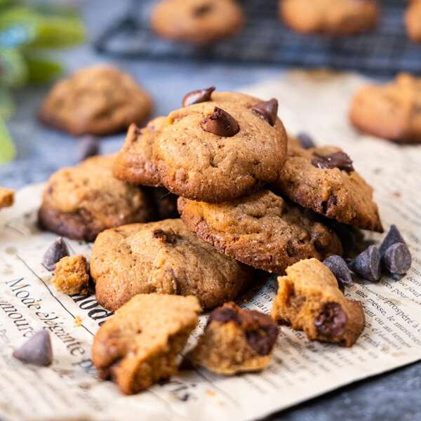

Chocolate Chip Cookies

Description
*Chocolate chip cookies with a dark twist* Made for dark chocolate lovers.
Rich dark chocolate chips embedded in a not-too-sweet cookie batter.
Ingredients
- 1 cup butter
- 2 cups flour
- 2 eggs
- 0.5 teaspoon salt
- 1 teaspoon vanilla essence
- 1 cup granulated sugar
- 1 cup brown sugar
- 1 teaspoon baking powder
- 1 teaspoon baking soda
- 2.5 cups blended oatmeal
- ~350g chocolate chips
- 1.5 cups crushed walnuts/hazelnuts
Steps
- Using an electric beater, mix the butter, white sugar and brown sugar until combined (do not over mix).
- Add eggs and vanilla essence and beat until combined.
- Using a spatula, add and combine the flour, blended oatmeal, salt, baking soda and baking powder.
- Add chocolate chips and crushed nuts.
- Size cookies on a baking tray (each cookie should be approximately 1 measuring teaspoon of batter).
- Bake for 10 minutes at 190 degrees Celcius.
- Cool baked cookies on a cooling rack.